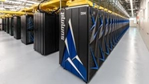
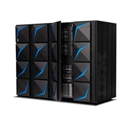
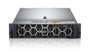
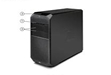
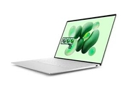

PORTFOLIO 6
Comparative Study on Different Types of Computers
A computer is an electronic device that processes data according to specific instructions to produce meaningful information. Computers are classified into different types based on various factors such as their physical size, processing power, user capacity, and intended purpose. The main categories include supercomputers, which are the largest and most powerful, designed for highly complex scientific and military applications; mainframe computers, which support hundreds or thousands of users simultaneously and are used by large organizations for bulk data processing; minicomputers (or midsize servers), which serve medium-sized organizations with moderate computing needs; personal computers (including desktops and laptops), designed for single users and general everyday tasks; and workstations, which are high-performance machines tailored for professional and technical applications such as graphic design and engineering. This classification framework helps to understand the diverse functions, capacities, and use cases of different computer types in various fields.
WHAT IS A COMPUTER?
A computer is an electronic device that operates under the control of instructions stored in its own memory. It is designed to accept data as input, process this data according to specified rules or programs, produce meaningful information as output, and store data for future use. The core functions of a computer include taking input, processing data, storing data, producing output, and controlling these operations efficiently.
TYPES OF COMPUTER
Supercomputer
Supercomputers represent the highest tier in computing power, designed for extremely complex and large-scale computational tasks. They consist of thousands of processors working in parallel to perform intensive calculations at incredible speeds, suitable for scientific research, weather forecasting, cryptography, and simulations of physical phenomena. Supercomputers are rare, very costly, and occupy significant physical space, but they are unmatched in computational ability and speed.
Mainframe Computers
Mainframe computers are large, extremely powerful systems designed to handle and process vast amounts of data for hundreds or even thousands of users simultaneously. They are commonly used by large institutions, such as banks, government agencies, and corporations, to support mission-critical applications including large-scale transaction processing and enterprise resource planning. Mainframes feature high reliability, extensive input/output capabilities, and massive storage, making them essential for heavy-duty processing environments.
Mini Computers
A mini computer, also called a midrange computer, is a mid-sized computer that falls between the larger mainframe computers and smaller microcomputers in terms of size, cost, and power. It is designed to support multiple users simultaneously through time-sharing technology, allowing it to handle small to medium-scale business operations, educational labs, and industrial automation tasks. Mini computers typically have more powerful processors than microcomputers and can execute multitasking for various applications, from database management to business transaction processing. They are smaller and less expensive than mainframe computers but more capable and pricier than personal microcomputers.
Server
Servers are computers dedicated to providing data, applications, and network resources to other computers over a network. They vary in size and power from small, dedicated devices to large, enterprise-grade machines. Servers manage tasks such as web hosting, database management, file storage, and network management. Unlike personal computers, servers emphasize availability, reliability, and security to serve multiple clients or users simultaneously.
Workstations
Workstations are high-performance single-user computers specifically built for technical or scientific applications that require significant computing power beyond what typical microcomputers offer. These machines are commonly used by engineers, graphic designers, and researchers for specialized tasks involving complex calculations, 3D modeling, and data analysis. Workstations provide enhanced graphics capabilities, faster processors, and larger memory capacity compared to regular personal computers.
Micro Computers
Micro computers, often called personal computers (PCs), are the smallest among the categories and designed primarily for individual users. They include desktops, laptops, tablets, and smartphones and are intended mainly for personal tasks such as word processing, internet browsing, gaming, and basic office applications. Micro computers are less powerful than mini computers and generally do not support multiple users concurrently. They offer portability and affordability, making them ubiquitous for everyday computing needs.
A COMPUTER HAVE THE FOLLOWING:
CPU (Central Processing Unit)
The CPU is the main component of a computer, often called the "brain" of the system. It executes instructions from programs by performing arithmetic, logic, control, and input/output operations. The CPU coordinates and processes data, allowing the computer to function and carry out tasks.
Memory
Memory in a computer refers to the storage area that holds data and instructions temporarily while the CPU processes them. It includes primary memory like RAM (Random Access Memory), which provides fast access to data for quick computing, and secondary storage like hard drives or SSDs for long-term data retention.
Processing Speed
Processing speed is the rate at which a computer's CPU executes instructions, typically measured in gigahertz (GHz). Faster processing speeds allow the computer to perform more calculations or tasks per second, improving system performance.
Calculating Power
Calculating power refers to a computer's ability to perform computations and mathematical operations. It is influenced by the CPU architecture, number of cores, clock speed, and other factors.
Working Principle
This describes how a computer operates—by receiving input data, processing it according to program instructions, storing information temporarily or permanently, and producing output. Computers work under a control unit that sequences operations and an arithmetic-logic unit that performs calculations.
Energy Consumption
Energy consumption indicates how much electrical power a computer uses during operation. It varies widely by computer type and configuration, from low power for microcomputers to very high in supercomputers requiring substantial cooling systems.
Field of Use
Field of use refers to the typical application environment or tasks for which a computer type is designed, such as personal computing, business data processing, scientific research, or large scale transaction handling.
EXAMPLES
| TYPES OF COMPUTER | NAME/BRAND | BUILD | CPU | MEMORY | PROCESSING SPEED | CALCULATING POWER | WORKING PRINCIPLE | ENERGY COMSUMPTION | FIELD OF USE |
|---|---|---|---|---|---|---|---|---|---|
| Supercomputer | IBM Summit | Roomsized cluster | Thousands of cores, 3.07 GHz POWER9 +GPUs | Hundreds of TBs | 200+ petaflops | Petaflops scale | Massively parallel computation | Megawatts | Scientific research, climate modeling |
| Mainframe Computers | IBM z15 | Large cabinet | 40 cores, 5 GHz custom processors | Multiple TBs | Massive parallel processing | Teraflops scale | Multi-user, batch & timesharing | Kilowatts | Banking, governments, enterprise data |
| Mini Computers | Apple Mac mini | Small desktop box | Apple M1, 8 cores, 3.2 GHz | 8-16GB highspeed | 8 cores, ~3.2 GHz | Tens of GFLOPS | Multi-user, shared memory processing | 30 watts | Small businesses, media servers |
| Server | Dell Power- Edge R740 | Rackmount 2U size | Dual Intel Xeon Silver, 24 cores total | Up to 3TB ECC RAM | 24 cores at ~3 GHz | Hundreds of GFLOPS | Multi-user network services | 500-700 watts | Web hosting, cloud computing |
| Workstations | HP Z4 G4 | Midtower PC | Intel Xeon W-2235, 6 cores, 3 | Up to 256GB ECC RAM | 6 cores, 3.8 GHz | Hundreds of GFLOPS | Singleuser, optimized for heavy tasks | 250 watts | CAD, 3D rendering, simulations |
| Micro Computers | Dell XPS 13 | Portable laptop | DIntel Core i7, 4 cores, 4.8 GHz turbo | R16GB DDR4 | 4 cores, up to 4.8 GHz | Tens to hundreds of GFLOPS | Singleuser, GUI OS | 15-25 watts | Personal tasks, education |
| TYPES OF COMPUTER | SAMPLE IMAGE | DESCRIPTION | USAGE |
|---|---|---|---|
| Supercomputer |  | IBM Summit is a powerful supercomputer with 4,608 nodes, each having 2 IBM POWER9 CPUs and 6 Nvidia Tesla V100 GPUs. It delivers peak performance of 200 petaflops and has over 10 petabytes of memory. Nodes connect via high-speed NVLink and InfiniBand networks for fast data transfer. | Used in scientific research such as climate modeling, AI, genomics, and materials science to solve complex computational problems at very high speeds. |
| Mainframe Computers |  | The IBM z15 is a highperformance mainframe featuring up to 12-core processors running at 5.2 GHz, built on 14nm technology with 9.2 billion transistors. It supports up to 40 TB of RAM and advanced on-chip compression. Its architecture enables extensive data protection and reliability, with a multiframe setup supporting up to 190 processors. | Used by large enterprises for critical applications like banking, finance, and government data processing, where reliability, security, and massive transaction processing are essential. . |
| Mini Computers |  |
The 2025 Mac mini features Apple’s M4 chip with a 10-core CPU (4 performance + 6 efficiency cores), 10core GPU, and 16-core Neural Engine. It supports up to 24GB of unified memory with 120Gbps bandwidth and hardwareaccelerated video encoding/decoding. The device is very small but powerful, boasting enhanced performance for creative and professional tasks. | Perfect for home offices, creative professionals, and media centers needing a compact yet high performance machine. For example, it handles 4K video editing and software development efficiently. |
| Server |  | The PowerEdge R740 is a 2U rack server supporting up to dual 2nd Gen Intel Xeon Scalable processors, each with up to 28 cores (56 cores total). It has 24 DDR4 DIMM slots supporting up to 3TB RAM with speeds up to 2933 MT/s. Storage supports up to 16 x 2.5" drives. It is optimized for virtualization and scalable applications. | Designed for data centers and enterprise environments, used for virtualization, cloud computing, and high performance workloads like database management and analytics. |
| Workstations |  | The HP Z4 G4 supports Intel Xeon W or Core X processors up to 18 cores and up to 512GB DDR4 ECC RAM. It offers dual high-end GPUs support, up to 46TB strage, and tool-free access for easy upgrades. Dimensions approximately 15.2" x 6.65" x 17.5", weighing 24.9 lbs. | Ideal for professionals in CAD, video editing, machine learning, and engineering simulations requiring high reliability and powerful performance. |
| Micro Computers |  | The Dell XPS 13 runs on Intel Core Ultra 9 processor with 8 cores up to 4.5 GHz, integrated Intel Arc graphics, up to 32GB LPDDR5X memory, and up to 2TB SSD storage. Measurements are about 11.6" x 7.8" x 0.58" and it weighs approximately 2.7 lbs | The Dell XPS 13 runs on Intel Core Ultra 9 processor with 8 cores up to 4.5 GHz, integrated Intel Arc graphics, up to 32GB LPDDR5X memory, and up to 2TB SSD storage. Measurements are about 11.6" x 7.8" x 0.58" and it weighs approximately 2.7 lbs |
COMPARE AND CONTRAST
| TYPES OF COMPUTER | PROCESSING SPEED | MEMORY CAPACITY | POWER CONCUMPTION | MINIMUM CONFIGURATION | USAGE |
|---|---|---|---|---|---|
| Supercomputer | Fastest, measured in petaflops | Hundreds of TBs | Megawatts | Thousands of cores | Scientific research, climate modeling |
| Mainframe Computers | Very fast, millions of MIPS | Several TBs | Kilowatts | Multi-core processors | Banking systems, large enterprises |
| Mini Computers | Moderate, tens of MIPS | GBs to tens of GBs | Tens of watts | Multi-core CPU | Small to medium business applications |
| Server | High, hundreds of GFLOPS | Hundreds of GBs to TBs | Hundreds of watts | Multi-core CPUs, high RAM | Web hosting, data center service |
| Workstations | High, hundreds of GFLOPS | Tens to hundreds of GBs | Hundreds of watts | Multi-core high performance CPU | CAD, video editing, scientific simulations |
| Micro Computers | Lower, tens to hundreds of GFLOPS | GBs | 10-30 watts | Single to quad-core CPU | Personal use, office work, education |